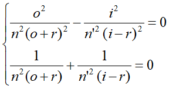
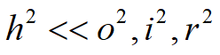
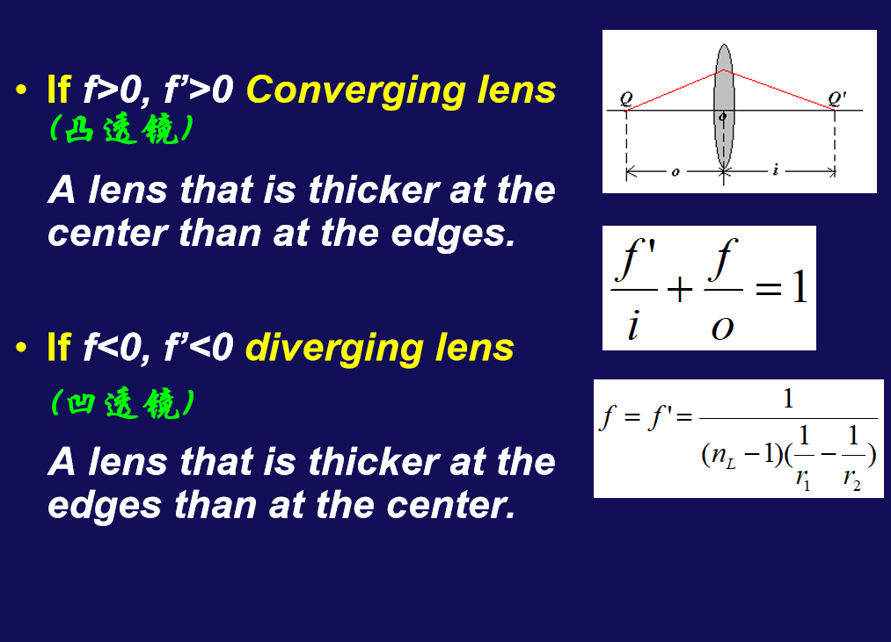
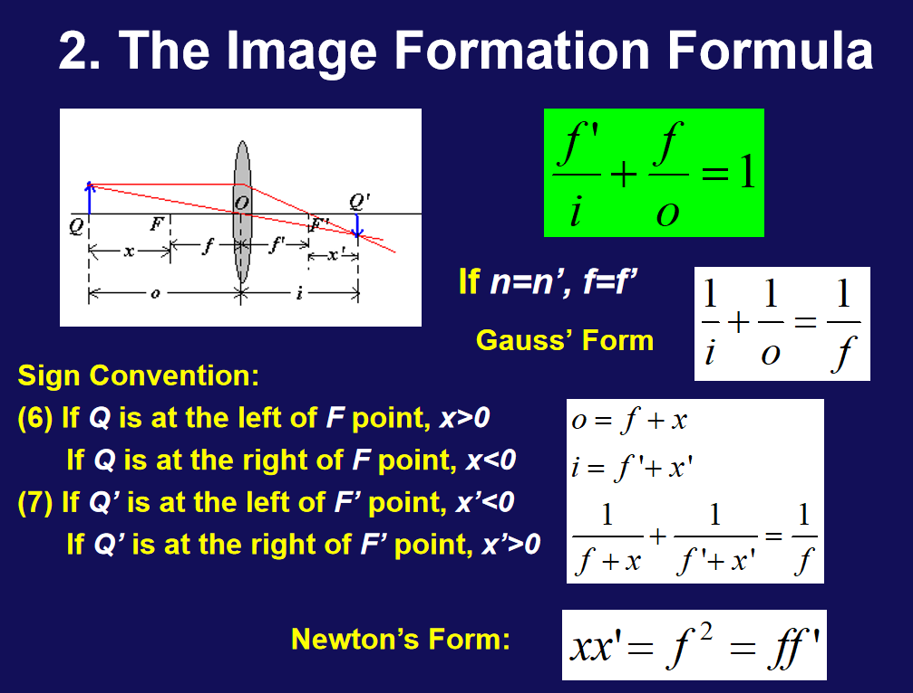
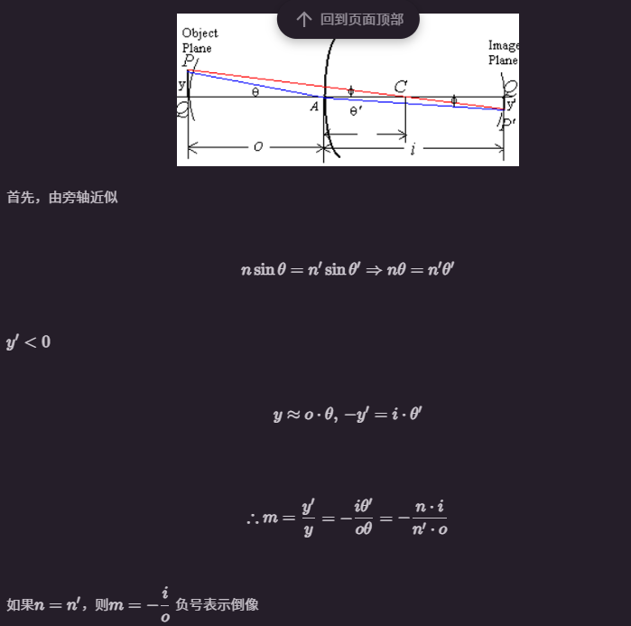
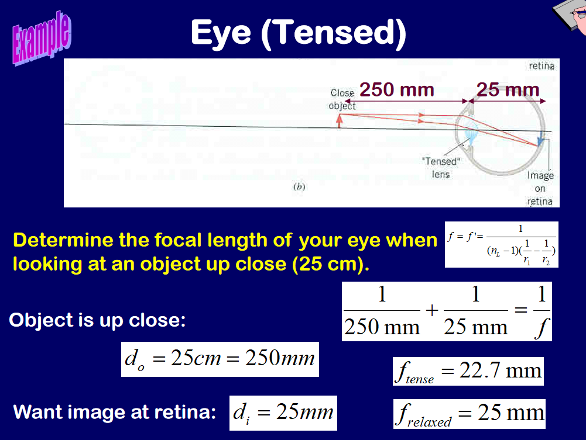

Chapter40 Geometrical Optics
光的性质与光在不同物质中的传播。
Geometrical Optics (几何光学): the case in which light travels in straight line and encounters objects whose size is much larger than .
Words: mirrors(反射镜), lenses(透镜), prisms(棱镜)
Wave Optics (or Physical Optical 物理光学): the passage of light through very narrow slits or around very narrow barriers, whose dimensions may be comparable to .
Words: reflection(反射), refraction(折射), interference(干涉), diffraction(衍射), polarization(偏振)
40-2
三定律：直线传播、反射定律、折射定律。
频率越高，折射率越大。
- 全反射：当光入射角大于临界角，没有光线出现折射，仅反射，这仅对从光密介质到光疏介质的情况成立。
临界角怎么求，只需要让折射出射角大于90°即可，那你这个时候\(sin\theta = \frac{n_2}{n_1}\)
-
色散：频率不同，折射率不同
-
棱镜
40-3 惠更斯原理
波前上的每一个点都可以看作是新的球面波（次波）源，这些次波相干叠加后形成了波的传播方向和波前。
证明反射与折射的定律。
反射证明就是证明\(i_1=i_1'\)，那两条蓝色的线对应两个到达面，是与平行光垂直的。
所以可以通过证明\(i_1' = i_2'\)实现，这一证明利用全等的两个直角三角形证明(HL)\(ΔA_1C_1B_n≅ΔB_nA_nA_1\)。
40-4 费马原理
定义一个光程：光在两点之间的传播距离乘以折射率。
比方说真空直线，那光程就是\(|QP|\)，那下面那个三段路的例子，我们就有\(n_1|QP|+n_2|PQ|+n_3|QR|\)。那么我们理解一下，是不是其实就是等效光在真空中花相同的时间所走的路程。
利用表达式表示其实就是\(L = \int nds\)。
费马原理是指光线在传播过程中，若可以成像，则光程的变分为零(对某一个变量求偏导为零)
比方说我们利用费马原理来证明反射与折射定理：
其核心在于将费马原理成立推理\(\frac{dL}{dx}=0\)与三角形边长与角度关联起来，注意x是一个变量，我们不知道具体折射/反射的位置。
40-5 成像
成像的基本原则是等光程，也就是说光线是同时到达的。
左边称为物方，右边称为像方。
40-6 球面镜成像
这是分别对\(\triangle MQC\)与\(\triangle MCQ'\)进行讨论，一个用正弦定理，一个用余弦定理。
然后就出现一个问题，对于最终结果，如果\(\phi\)改变，那么左右就不再相等，需要改变不能改变的\(r\)，这合理吗？这不合理。
所以就把左右两边的均置为0，这样不会因为\(\phi\)改变而导致"不能成像"。

这将得到唯一的点，解得到唯一的\(i\)与\(o\)，这说明定位了唯一的点\(Q'\)称为齐明点。
还有办法：旁轴近似

你\(\phi\)趋于0其实就跟收集比较靠近水平轴的光线是一个道理，这就是"眯眼睛"的原理。
这一情况我们也计算左侧为0得到了\(\frac{n'}{i} + \frac{n}{o} = \frac{n' -n}{r}\)。
假设一系列光从某点出发，经过球面镜变为平行光，等效于像在无穷远\(i->∞\)，这种情况下我们有\(f = o = \frac{nr}{n'-n}\)
假设一系列光通过球面镜聚集到同一点，等效于物在无穷远即\(o->∞\)，这种情况则是\(f' = i = \frac{n'r}{n'-n}\)
那么：
符号约定：
翻译一下：实正虚负，凸正凹负。
Q:实物在A左侧，虚物在A右侧。Q':实像在A右侧，虚像在A左侧。C:球心在右侧为凸，在左侧为凹。
我们把反射视为是折射的特殊情况，所以有：
相当于把像的位置的正负反了一下喽。
稍微推一下，不然手生了。
\(nsin\theta = n'sin\theta'\)
我们规定了朝法线一个方向为正，一个为负，所以就有\(sin\theta = -sin\theta'\)即\(n = -n'\)。
那么第一焦距\(f_1 = -\frac{r}{2}\)，第二焦距\(f_2 = \frac{r}{2}\)。
之前有\(\frac{f_1}{o} + \frac{f_2}{i} = 1\)也就是说\(\frac{1}{o} + \frac{1}{i} = -\frac{2}{r}\)，这就是我们球面镜反射的公公又式式啊。
横向放大率\(m = -\frac{i}{o}\)
40-7 薄透镜
重点在于两个方程的联立，以及理解第二次成像的"物"等效于就是第一次成像的"像"，也就是虚物。
简单复习式地推一下：
其中：
有\(-o_2 = i_1 - d\)，我们把\(d\)趋近于0，就有\(-o_2 = i_1\)，所以:
可以推出：\(\frac{f_1f_2}{o_1} + \frac{f_1'f_2'}{i_2} = f_1' + f_2\)
我们这里把右边除过来\(f = \frac{f_1f_2}{f_1'+f_2} \ f' = \frac{f_1'f_2'}{f_1'+f_2}\)
那凭借这个其实就得到了\(\frac{f}{o} + \frac{f'}{i} = 1\)的一般形式。
那我们再把原来的那个与折射率有关的值代入有：
因此\(\frac{f'}{f} = \frac{n'}{n}\)
如果n = n' = 1(都是空气)
那么\(f = f' = \frac{1}{(n_L-1)(\frac{1}{r_1} - \frac{1}{r2})}\)
这就是我们的磨镜者公式。
对于凸透镜就是\(r_1>0 \ r_2 < 0 \(因此\)f、f' > 0\)，对于凹透镜就是\(r_1 < 0 \ r_2 > 0\)因此\(f、f' < 0\)。

由于薄透镜的性质，如果\(n=n'\)那么就有\(f=f'\)，我们代入就有\(\frac{1}{i}+\frac{1}{o} = \frac{1}{f}\)
我们将图中的\(o = f+ x \ \ i = f' + x'\)代入就能获得\(xx' = f^2 = ff'\)的形式。

横向放大倍数可以与之前的关联一下:

因此\(m_1 = -\frac{i_1n}{o_1n_L} \ m_2 = -\frac{i_2n_L}{o_2n'}\)
人眼成像

最远可以看到无穷远，最近可以看过0.25m。
近视就是看不到无穷远，远视(老花)就是看不到0.25m。
所以说我们眼睛\(f\)的调节范围为22.7(\(\frac{250}{11}\))-25mm。